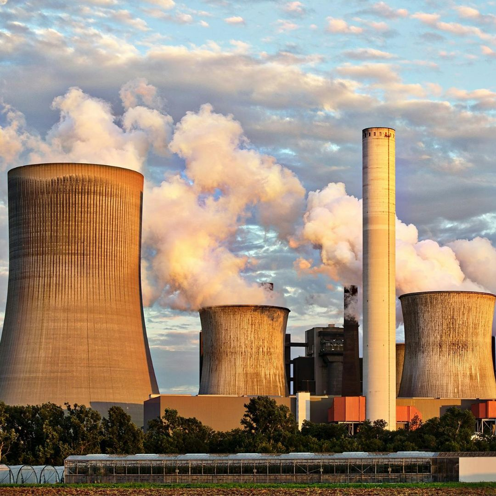

Atividades
As atividades realizadas ao longo do ano.
-

31 de outubro de 2025
MadIT 2025
Organizado pela Região Madeira da Ordem dos Engenheiros e aberta à sociedade em geral, o MadIT 2025 teve como convidados João Roque, Rita Maçorano, Frederico Ferreira, Helena Braga, Ivone Martins e Paulo Menezes. Um painel inspirador de “contadores de histórias”que partilharam histórias de vida e inovação, conhecimento e criatividade, nas áreas da ciência, da engenharia, da tecnologia, da cultura e das artes.
-

02 de fevereiro de 2026
Palestra . O papel da Filosofia na Inteligência Artificial
Desde o início da IA, questões filosóficas sobre mente, conhecimento, raciocínio e ação foram incorporadas e reformuladas como problemas computacionais.A palestra, mostrou-nos como a Filosofia esteve presente desde as primeiras fases da Inteligência Artificial, contribuindo para os seus fundamentos teóricos e para a evolução das diferentes abordagens, da IA simbólica às técnicas baseadas em dados. Orador . Eduardo Fermé [Professor Catedrático da Área de Inteligência Artificial na Faculdade de Ciências Exatas e da Engenharia da Universidade da Madeira]
-

09 de fevereiro de 2026
Oficina Educamedia
O programa EDUCAMEDIA Assenta na vertente "Educação para os media” e apresenta-se como veículo de promoção da inclusão social e exercício da cidadania, procura melhorar a qualidade do ensino nas escolas e a qualidade de vida das comunidades nas quais se insere. Com a oficina pretendeu-se promover o Madeira Curtas, através de momentos teóricos e práticos, os alunos desenvolveram uma pequena curtametragem com duração de 2 minutos.
-

9 de março de 2026
Visita de Estudo . RTP Madeira
Numa iniciativa integrada nas atividades de Educação para a Cidadania, visitamos a RTP Madeira. Fomos recebidos pelo jornalista Gil Rosa, que nos guiou pelos bastidores da televisão e rádio públicas. Com enorme prontidão e disponibilidade, o jornalista partilhou o seu conhecimento e respondeu a todas as curiosidades dos nossos jovens, proporcionando uma aula prática sobre o papel dos media na nossa sociedade. Foi uma experiência extremamente enriquecedora, onde a teoria deu lugar à realidade da informação.
-

21 de maio de 2026
Visita de Estudo . Madeira Experiências Imersivas
O epicentro físico e tecnológico da ilha da Madeira, onde a inovação encontra a tradição, para criar experiências inesquecíveis. Líderes regionais na aplicação da Realidade Virtual (RV) e Realidade Aumentada (RA) ao sector do Turismo. Fornece uma janela para o passado e para o presente, nomeadamente com a divulgação da flora, fauna, locais emblemáticos, tradições e gastronomia da Madeira, galardoada pela World Travel Awards e pela Unesco.
-
AIB
2025
2026